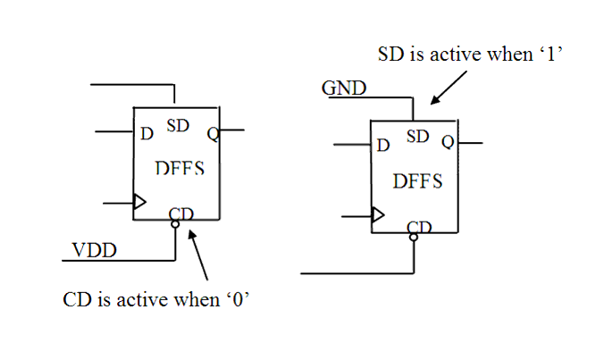

| Description | This rule fires when Leda detects flip-flops or latches that have both set and reset pins, and neither of them is connected to a fixed value. Connecting either the set or reset pin to a fixed value helps avoid initialization problems for the circuit, especially in simulation. |
| Policy | DESIGN |
| Ruleset | STRUCTURE |
| Language | VHDL/Verilog |
| Type | Hardware |
| Severity | Error |
This is an example of invalid Verilog code, followed by a circuit diagram that illustrates the problem:
module ntl_str81_top; ... supply1 VDD; supply0 GND; GTECH_FD3 U1(.D(Din), .CP(Clock), .CD(Reset),.SD(VDD), .Q(Dout1)); // OK, SD is connected to VDD GTECH_FD3 U2(.D(Din), .CP(Clock), .CD(Reset),.SD(Set), .Q(Dout2)); // NTL_STR81 fires -- CD or SD is not connected to VDD/GND ... endmodule